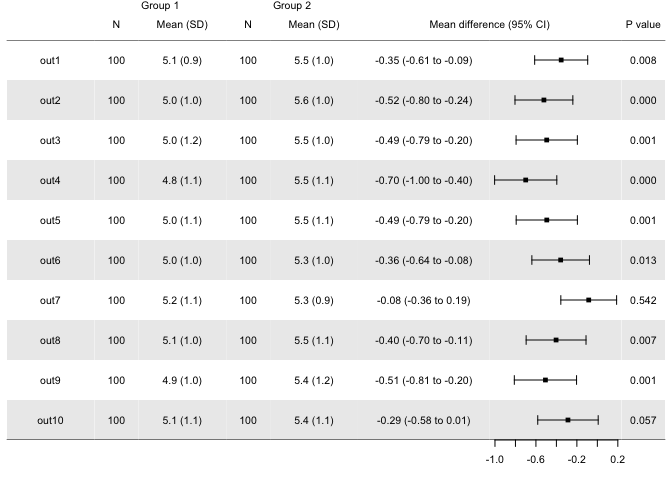

forplot allows the generation of highly customizable forest plots. It relies on the R graphics package and generates an overall layout that is then populated with the desired elements (e.g. a text column or a specific plot).
Installation
forplot can be installed from github:
#install package using remotes
remotes::install_github("dcr-unibe-ch/forplot")
# load package
library(forplot)Basic usage
forplot contains two main functions:
genfobjgenerates a list of class fobj based on a data frame (dat) and a layoutplotfobjproduces the plot from the fobj
The fobj can be modified using a set of helper functions or by directly changing the list. The individual elements are from the R graphics package and all options available there can be used.
Publication quality forest plots can be created with only a small amount of code.
data(forplotdata)
fobj <- genfobj(dat = forplotdata,
layout = c("t","t","t","t","t","t","f","t"),
lwidths = c(2,1,2,1,2,3,3,1)) |>
stripes() |>
gridlines() |>
header(headernr = 1,
hlayout = c(1,2,2,3,3,4,4,4),
labels = c("", "Group 1", "Group 2", ""), y = .9) |>
header(headernr = 2,
hlayout = c(1,2,3,4,5,6,6,7),
labels = c("", "N", "Mean (SD)", "N", "Mean (SD)",
"Mean difference (95% CI)", "P value"), y = .4)
plotfobj(fobj)
The above example only scratches the surface of what forplot can do. Check the vignette for further examples.